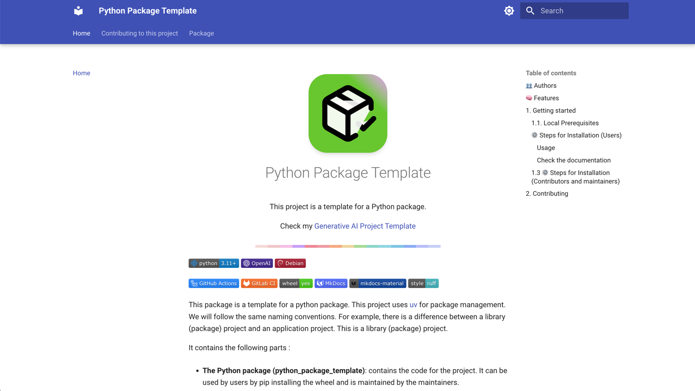

Python Package Template
This project is a template for a Python package.
Check my Generative AI Project Template

This package is a template for a python package. This project uses uv for package management. We will follow the same naming conventions. For example, there is a difference between a library (package) project and an application project. This is a library (package) project.
It contains the following parts :
-
The Python package (python_package_template): contains the code for the project. It can be used by users by pip installing the wheel and is maintained by the maintainers.
-
Autogenerated documentation: Docs made using MkDocs.

👥 Authors¶
- (Author) Amine Djeghri
🧠 Features¶
Engineering tools:
- [x] Use UV to manage packages
- [x] pre-commit hooks: use
ruffto ensure the code quality &detect-secretsto scan the secrets in the code. - [x] Logging using loguru (with colors)
- [x] Pytest for unit tests
- [x] Dockerized project (Dockerfile) both for development and production
- [x] Make commands to handle everything for you: install, run, test
CI/CD & Maintenance tools:
- [x] CI/CD pipelines:
.github/workflowsfor GitHub - [x] Local CI/CD pipelines: GitHub Actions using
github act - [x] GitHub Actions for deploying to GitHub Pages with mkdocs gh-deploy
- [x] Renovate
.github/renovate.jsonfor automatic dependency and security updates -
[x] Issues & PRs templates
-
Documentation tools:
-
[x] Wiki creation and setup of documentation website using Mkdocs
- [x] GitHub Actions for deploying to GitHub Pages with mkdocs gh-deploy
1. Getting started¶
The following files are used in the contribution pipeline:
.env.example: example of the .env file..env: contains the environment variables used by the app.Makefile: contains the commands to run the app locally.Dockerfile: the dockerfile used to build the project inside a container. It uses the Makefile commands to run the app..pre-commit-config.yaml: pre-commit hooks configuration filepyproject.toml: contains the pytest, ruff & other configurations.src/python_package_tempalte/utils.py: logger using logguru and settings using pydantic. the frontend..github/workflows/**.yml: GitHub actions configuration files..github/dependabot.yml: dependabot configuration file..gitignore: contains the files to ignore in the project.
1.1. Local Prerequisites¶
- Ubuntu 22.04 or MacOS
- Python 3.11
⚙️ Steps for Installation (Users)¶
Use pip or uv pip to install the package :
pip install "dist/dist/python_package_template-0.1.0-py3-none-any.whl"
# or
uv pip install "dist/dist/python_package_template-0.1.0-py3-none-any.whl"
Usage¶
from python_package_template.example import hello
hello()
# Output: 2025-01-05 08:05:38.143 | INFO | python_package_template.example:hello:5 - Hello world
Check the documentation¶
You can check the documentation (website), or the notebook.ipynb.
1.3 ⚙️ Steps for Installation (Contributors and maintainers)¶
Check the CONTRIBUTING.md file for installation instructions
2. Contributing¶
Check the CONTRIBUTING.md file for more information.